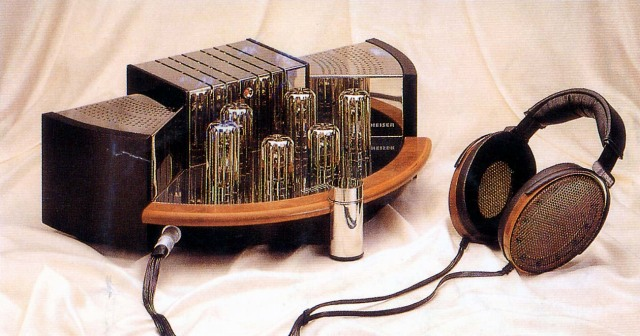

Orpheus HE90/HEV90

■価格 2,800,000円■型式 エレクトレットスタティック型オープンエアタイプ■振動板 厚さ1ミクロン■インピーダンス ■再生周波数帯域 25-75,000Hz -3ｄB■許容入力 ■感度 ■コード 3ｍ■重量 365g アンプ 13kg■発売 1991年10月■販売終了 ■備考 価格は1993年版STEREO GUIDEのもの 1995年版は2,400,000円 2000年版は2,800,000円
ゼンハイザーのインデックスへ